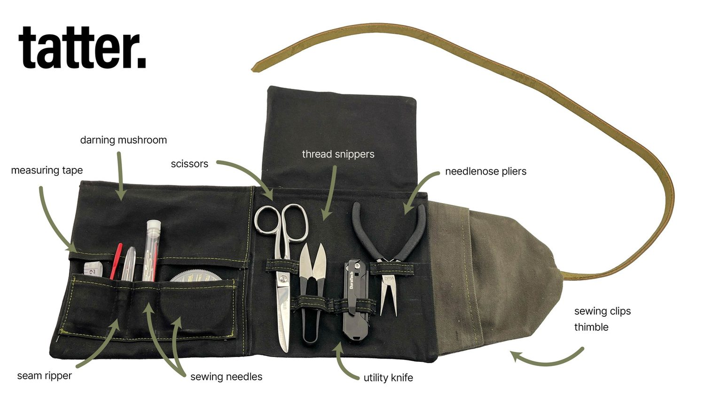
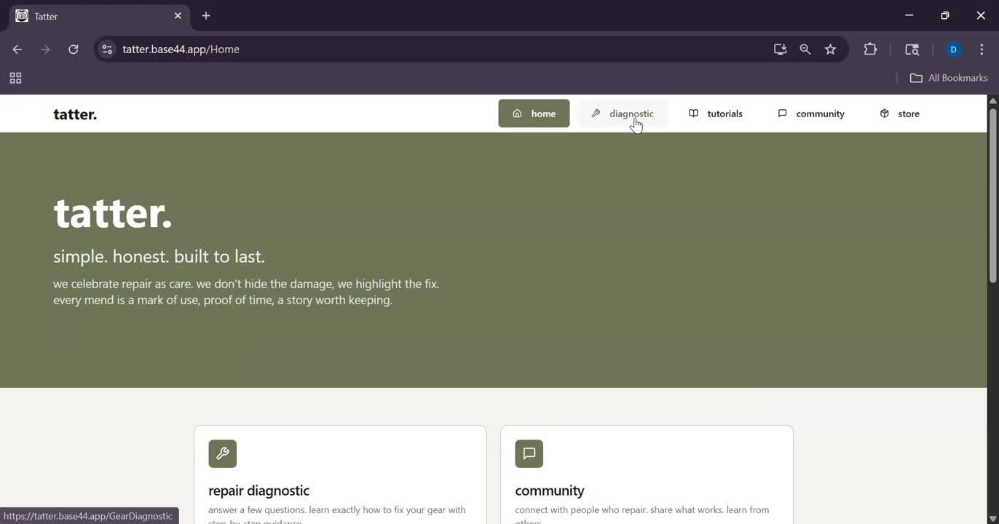
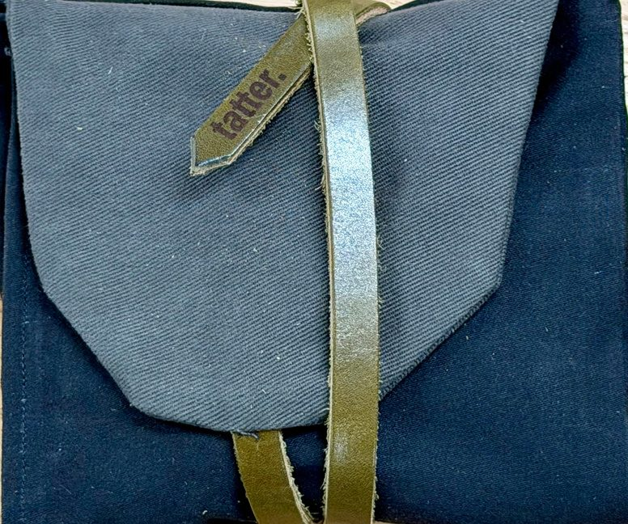
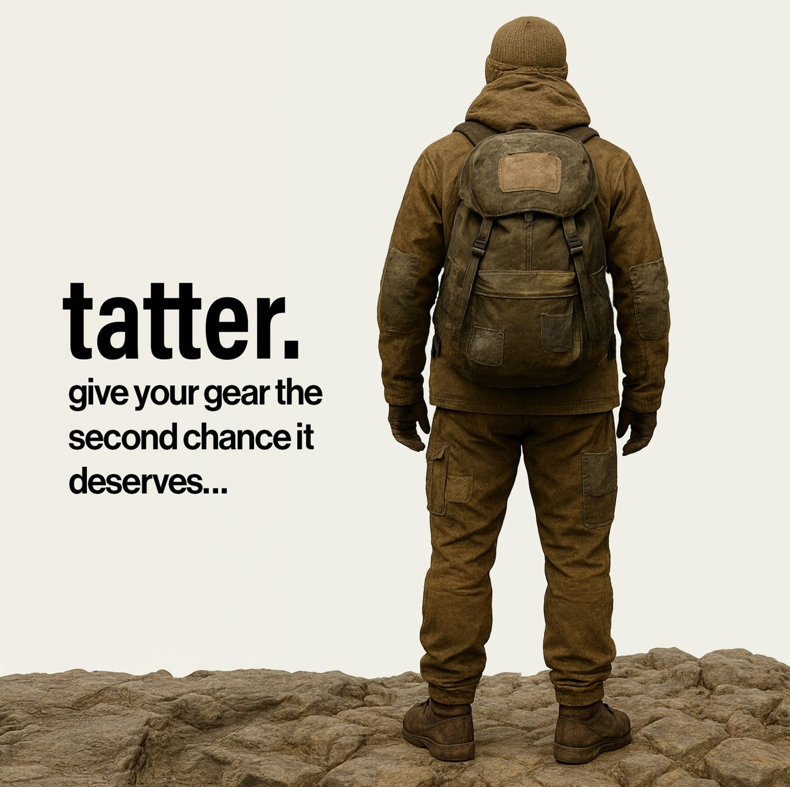

Case study · Consumer product · IPD Challenge winner
tatter.
we mend to make more memories
TL;DR
An app and starter toolkit that help outdoor enthusiasts repair worn and torn gear — instead of tossing it. You run a quick diagnostic, tatter. matches you to the right materials and a guided fix, and your gear gets a second chance.
tatter. pairs a mobile app with a physical repair kit so people can fix their outdoor gear at home, confidently. The app diagnoses the damage and walks you through the repair; the kit makes sure you have the right materials on hand when something breaks.
It started as an Integrated Product Development challenge at Michigan, built by our team — Team Woodpecker. I led the product & services definition: the end-to-end app experience and the kit system that the rest of the strategy was built around.
The belief underneath it: every piece of worn or broken outdoor gear deserves a second chance. We took a wabi-sabi view of repair — wear is worth celebrating, and a mend is a mark of use, not a flaw to hide.
Problem Space
People toss repairable gear because fixing it feels hard
Repairing your own outdoor gear is seen as daunting — it's inconvenient, it needs specific tools, and it takes know-how most people don't have. So good, expensive gear gets thrown out over a tear, a broken seam, a burn mark, or a snapped buckle. That's waste, cost, and a lost connection to gear people actually care about.
The timing is right: rising gear costs from tariffs and inflation, a growing sustainability and right-to-repair movement, and real evidence that hands-on, creative work is good for wellbeing. Meanwhile, the repair gap is large and measurable.
We grounded this in real conversations rather than assumptions. One that stuck with the team:
Who We Serve
Outdoor people, 18–31, who'd rather mend than replace
Active, sustainability-minded young adults and professionals who own mid-to-high-quality gear, feel the rising cost of replacing it, and want affordable, personal alternatives to buying new. We shaped the product around four motivations:
The Time Keeper
Wants to repair, but is put off by the time it takes. Needs quick, convenient fixes.
The Knowledge Seeker
Willing to try, but overwhelmed by confusing instructions and too many options. Needs clear, step-by-step guidance.
The Resourceful Reuser
Motivated to cut waste and extend the life of their things. Wants accessible tools to build DIY confidence.
The Memory Saver
Hates discarding cherished gear over a small tear. Repairs to keep the memories attached to it alive.
Solution Space
Diagnose, then do — with the right kit in hand
The product I designed turns "I don't know where to start" into a confident fix. You photograph the damage; the app classifies it and asks a short yes/no questionnaire to pin down the problem. From there it gives you an offline, illustrated tutorial with embedded video — and recommends the exact material kit that matches your gear. A built-in community lets people share their own mends, which is where the brand becomes a movement rather than a utility.

Photo diagnostic — snap the damage; the app classifies the issue and narrows it with a quick questionnaire.
Guided, offline tutorials — clear written steps and video, downloadable so they work with no signal on the trail.
Kit matching — the diagnostic ends on the right material kit for your gear, not a generic shopping page.
Community — a forum to post fixes, swap tips, and learn from peers (where 92% trust peer content over ads).
The needs that set our focus
Example: a diagnostic that narrows a leaking tent down to a seam vs. a fabric tear.
Example: step-by-step video matched to the parts already in my kit.
Example: a kit stocked for the most common repairs for my kind of gear.
The Kits
Five kits to launch with
Rather than one do-everything box, the system is a small set of dual-purpose kits, each tuned to a common failure mode. Standard kits run $25–$35; larger specialized kits up to about $50. The app is free at launch so discovery stays frictionless — the kits are the business.

Shell + Ripstop Patch Kit
The most common damage: tears and punctures in jackets, tents, and packs, with patch weights to match the fabric.
Soft-Goods Stitch & Reinforce Kit
Restores worn seams, hems, and fleece — with visible-mend, sashiko-style swatches for repairs you can show off.
Waterproof + Seam Repair Kit
For leaks in rain shells, tents, and dry bags: seam tape, sealant, and a DWR refresh.
Hardware & Webbing Repair Kit
Strap and buckle failures on packs and guy-lines — replace webbing and buckles without re-buying gear.
Down & Insulation Repair Kit
Loft loss and small holes in puffies and sleeping bags, with patches that keep the insulation in.
Market
A small slice of a large intersection
tatter. sits where three growing markets overlap — gear repair, the outdoor category, and the DIY movement. Outdoor gear repair is the core target; even a fractional capture is a real business.
Against traditional repair shops (costly, slow), brand programs (locked to one brand), bare kits (no guidance), and generic tutorials (imprecise), tatter.'s edge is the diagnostic-to-kit match: precise, brand-agnostic guidance that ends with the exact materials in hand.
Outcome
A working product that won
We shipped a working app prototype and a physical starter kit, and the project won the IPD Challenge — recognition for end-to-end product execution under real constraints: a sharp problem, a disciplined scope, and something that actually ran. The go-to-market plan laid out a path from a first 500–1,000 units toward national retail.
